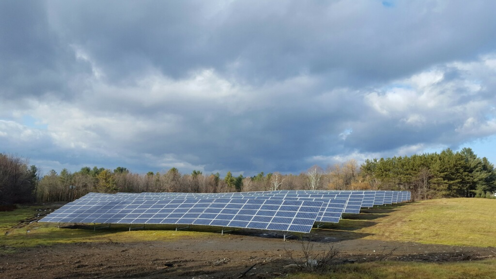

Welcome to the Solar Panel Snow Clearing Web Application
Please use the tabs on the left to navigate between the different pages.
This web application tracks the Vermont solar panel sites in Barre, Brandon, and St. Albans.
Barre, Vermont
Photo of the Barre solar array

Brandon, Vermont
Photo of the Brandon solar array
 St. Albans, Vermont
Photo of the St. Albans solar array
St. Albans, Vermont
Photo of the St. Albans solar array